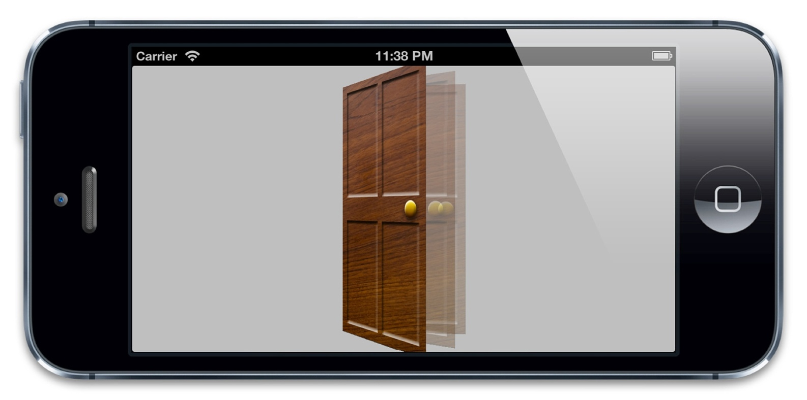
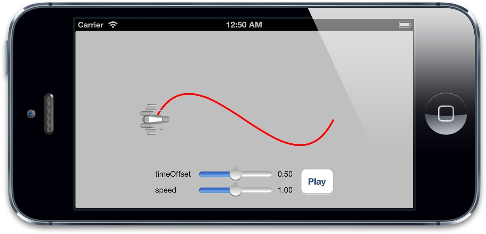

`CAMediaTiming`协议
CAMediaTiming协议
CAMediaTiming协议定义了在一段动画内用来控制逝去时间的属性的集合，CALayer和CAAnimation都实现了这个协议，所以时间可以被任意基于一个图层或者一段动画的类控制。
持续和重复
我们在第八章“显式动画”中简单提到过duration（CAMediaTiming的属性之一），duration是一个CFTimeInterval的类型（类似于NSTimeInterval的一种双精度浮点类型），对将要进行的动画的一次迭代指定了时间。
这里的一次迭代是什么意思呢？CAMediaTiming另外还有一个属性叫做repeatCount，代表动画重复的迭代次数。如果duration是2，repeatCount设为3.5（三个半迭代），那么完整的动画时长将是7秒。
duration和repeatCount默认都是0。但这不意味着动画时长为0秒，或者0次，这里的0仅仅代表了“默认”，也就是0.25秒和1次，你可以用一个简单的测试来尝试为这两个属性赋多个值，如清单9.1，图9.1展示了程序的结果。
清单9.1 测试duration和repeatCount
@interface ViewController ()
@property (nonatomic, weak) IBOutlet UIView *containerView;
@property (nonatomic, weak) IBOutlet UITextField *durationField;
@property (nonatomic, weak) IBOutlet UITextField *repeatField;
@property (nonatomic, weak) IBOutlet UIButton *startButton;
@property (nonatomic, strong) CALayer *shipLayer;
@end
@implementation ViewController
- (void)viewDidLoad
{
[super viewDidLoad];
//add the ship
self.shipLayer = [CALayer layer];
self.shipLayer.frame = CGRectMake(0, 0, 128, 128);
self.shipLayer.position = CGPointMake(150, 150);
self.shipLayer.contents = (__bridge id)[UIImage imageNamed: @"Ship.png"].CGImage;
[self.containerView.layer addSublayer:self.shipLayer];
}
- (void)setControlsEnabled:(BOOL)enabled
{
for (UIControl *control in @[self.durationField, self.repeatField, self.startButton]) {
control.enabled = enabled;
control.alpha = enabled? 1.0f: 0.25f;
}
}
- (IBAction)hideKeyboard
{
[self.durationField resignFirstResponder];
[self.repeatField resignFirstResponder];
}
- (IBAction)start
{
CFTimeInterval duration = [self.durationField.text doubleValue];
float repeatCount = [self.repeatField.text floatValue];
//animate the ship rotation
CABasicAnimation *animation = [CABasicAnimation animation];
animation.keyPath = @"transform.rotation";
animation.duration = duration;
animation.repeatCount = repeatCount;
animation.byValue = @(M_PI * 2);
animation.delegate = self;
[self.shipLayer addAnimation:animation forKey:@"rotateAnimation"];
//disable controls
[self setControlsEnabled:NO];
}
- (void)animationDidStop:(CAAnimation *)anim finished:(BOOL)flag
{
//reenable controls
[self setControlsEnabled:YES];
}
@end

图9.1 演示duration和repeatCount的测试程序
创建重复动画的另一种方式是使用repeatDuration属性，它让动画重复一个指定的时间，而不是指定次数。你甚至设置一个叫做autoreverses的属性（BOOL类型）在每次间隔交替循环过程中自动回放。这对于播放一段连续非循环的动画很有用，例如打开一扇门，然后关上它（图9.2）。

图9.2 摆动门的动画
对门进行摆动的代码见清单9.2。我们用了autoreverses来使门在打开后自动关闭，在这里我们把repeatDuration设置为INFINITY，于是动画无限循环播放，设置repeatCount为INFINITY也有同样的效果。注意repeatCount和repeatDuration可能会相互冲突，所以你只要对其中一个指定非零值。对两个属性都设置非0值的行为没有被定义。
清单9.2 使用autoreverses属性实现门的摇摆
@interface ViewController ()
@property (nonatomic, weak) UIView *containerView;
@end
@implementation ViewController
- (void)viewDidLoad
{
[super viewDidLoad];
//add the door
CALayer *doorLayer = [CALayer layer];
doorLayer.frame = CGRectMake(0, 0, 128, 256);
doorLayer.position = CGPointMake(150 - 64, 150);
doorLayer.anchorPoint = CGPointMake(0, 0.5);
doorLayer.contents = (__bridge id)[UIImage imageNamed: @"Door.png"].CGImage;
[self.containerView.layer addSublayer:doorLayer];
//apply perspective transform
CATransform3D perspective = CATransform3DIdentity;
perspective.m34 = -1.0 / 500.0;
self.containerView.layer.sublayerTransform = perspective;
//apply swinging animation
CABasicAnimation *animation = [CABasicAnimation animation];
animation.keyPath = @"transform.rotation.y";
animation.toValue = @(-M_PI_2);
animation.duration = 2.0;
animation.repeatDuration = INFINITY;
animation.autoreverses = YES;
[doorLayer addAnimation:animation forKey:nil];
}
@end
相对时间
每次讨论到Core Animation，时间都是相对的，每个动画都有它自己描述的时间，可以独立地加速，延时或者偏移。
beginTime指定了动画开始之前的的延迟时间。这里的延迟从动画添加到可见图层的那一刻开始测量，默认是0（就是说动画会立刻执行）。
speed是一个时间的倍数，默认1.0，减少它会减慢图层/动画的时间，增加它会加快速度。如果2.0的速度，那么对于一个duration为1的动画，实际上在0.5秒的时候就已经完成了。
timeOffset和beginTime类似，但是和增加beginTime导致的延迟动画不同，增加timeOffset只是让动画快进到某一点，例如，对于一个持续1秒的动画来说，设置timeOffset为0.5意味着动画将从一半的地方开始。
和beginTime不同的是，timeOffset并不受speed的影响。所以如果你把speed设为2.0，把timeOffset设置为0.5，那么你的动画将从动画最后结束的地方开始，因为1秒的动画实际上被缩短到了0.5秒。然而即使使用了timeOffset让动画从结束的地方开始，它仍然播放了一个完整的时长，这个动画仅仅是循环了一圈，然后从头开始播放。
可以用清单9.3的测试程序验证一下，设置speed和timeOffset滑块到随意的值，然后点击播放来观察效果（见图9.3）
清单9.3 测试timeOffset和speed属性
@interface ViewController ()
@property (nonatomic, weak) IBOutlet UIView *containerView;
@property (nonatomic, weak) IBOutlet UILabel *speedLabel;
@property (nonatomic, weak) IBOutlet UILabel *timeOffsetLabel;
@property (nonatomic, weak) IBOutlet UISlider *speedSlider;
@property (nonatomic, weak) IBOutlet UISlider *timeOffsetSlider;
@property (nonatomic, strong) UIBezierPath *bezierPath;
@property (nonatomic, strong) CALayer *shipLayer;
@end
@implementation ViewController
- (void)viewDidLoad
{
[super viewDidLoad];
//create a path
self.bezierPath = [[UIBezierPath alloc] init];
[self.bezierPath moveToPoint:CGPointMake(0, 150)];
[self.bezierPath addCurveToPoint:CGPointMake(300, 150) controlPoint1:CGPointMake(75, 0) controlPoint2:CGPointMake(225, 300)];
//draw the path using a CAShapeLayer
CAShapeLayer *pathLayer = [CAShapeLayer layer];
pathLayer.path = self.bezierPath.CGPath;
pathLayer.fillColor = [UIColor clearColor].CGColor;
pathLayer.strokeColor = [UIColor redColor].CGColor;
pathLayer.lineWidth = 3.0f;
[self.containerView.layer addSublayer:pathLayer];
//add the ship
self.shipLayer = [CALayer layer];
self.shipLayer.frame = CGRectMake(0, 0, 64, 64);
self.shipLayer.position = CGPointMake(0, 150);
self.shipLayer.contents = (__bridge id)[UIImage imageNamed: @"Ship.png"].CGImage;
[self.containerView.layer addSublayer:self.shipLayer];
//set initial values
[self updateSliders];
}
- (IBAction)updateSliders
{
CFTimeInterval timeOffset = self.timeOffsetSlider.value;
self.timeOffsetLabel.text = [NSString stringWithFormat:@"%0.2f", timeOffset];
float speed = self.speedSlider.value;
self.speedLabel.text = [NSString stringWithFormat:@"%0.2f", speed];
}
- (IBAction)play
{
//create the keyframe animation
CAKeyframeAnimation *animation = [CAKeyframeAnimation animation];
animation.keyPath = @"position";
animation.timeOffset = self.timeOffsetSlider.value;
animation.speed = self.speedSlider.value;
animation.duration = 1.0;
animation.path = self.bezierPath.CGPath;
animation.rotationMode = kCAAnimationRotateAuto;
animation.removedOnCompletion = NO;
[self.shipLayer addAnimation:animation forKey:@"slide"];
}
@end

图9.3 测试时间偏移和速度的简单的应用程序
fillMode
对于beginTime非0的一段动画来说，会出现一个当动画添加到图层上但什么也没发生的状态。类似的，removeOnCompletion被设置为NO的动画将会在动画结束的时候仍然保持之前的状态。这就产生了一个问题，当动画开始之前和动画结束之后，被设置动画的属性将会是什么值呢？
一种可能是属性和动画没被添加之前保持一致，也就是在模型图层定义的值（见第七章“隐式动画”，模型图层和呈现图层的解释）。
另一种可能是保持动画开始之前那一帧，或者动画结束之后的那一帧。这就是所谓的填充，因为动画开始和结束的值用来填充开始之前和结束之后的时间。
这种行为就交给开发者了，它可以被CAMediaTiming的fillMode来控制。fillMode是一个NSString类型，可以接受如下四种常量：
kCAFillModeForwards
kCAFillModeBackwards
kCAFillModeBoth
kCAFillModeRemoved
默认是kCAFillModeRemoved，当动画不再播放的时候就显示图层模型指定的值剩下的三种类型向前，向后或者即向前又向后去填充动画状态，使得动画在开始前或者结束后仍然保持开始和结束那一刻的值。
这就对避免在动画结束的时候急速返回提供另一种方案（见第八章）。但是记住了，当用它来解决这个问题的时候，需要把removeOnCompletion设置为NO，另外需要给动画添加一个非空的键，于是可以在不需要动画的时候把它从图层上移除。